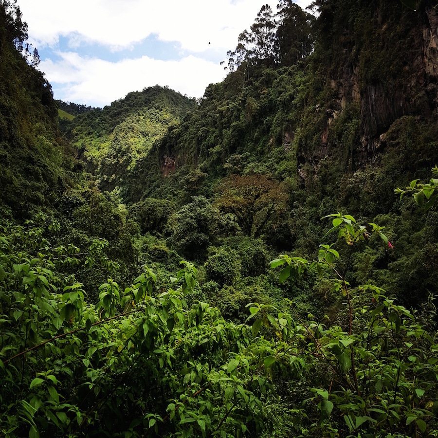
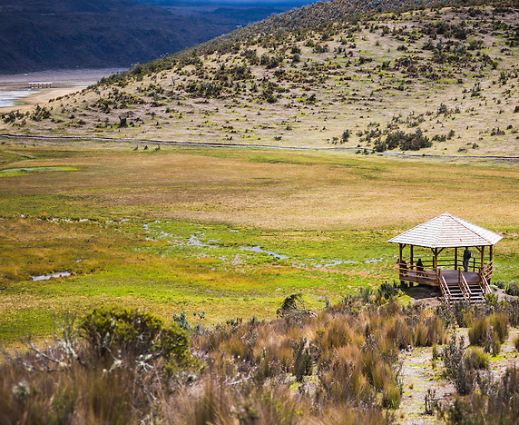

Saturday
January 26th
Molinuco
Molinuco
Saturday, 26th 8:00 am: The meeting Point or Pick up Point is Universidad Sna Francisco de Quito outside the main gate. 8:15 am: We drive through el Valle de los Chillos till we get to the entrance of Molinuco (free entrance). 10:30 - 14:00: We start hiking through the rainforest and small cascades until we get to the main waterfall that's about 10 meter high. A small pause with a traditional snack (included). 14:00 - 16:00: We head back to the parking lodge. 16:00 - 18:00: We go to a local restuarant in Sangolqui to taste hornado (pork) and many other traditionl ecuadorian dishes. 18:00 - 20:00: We drive back to Universidad San Francisco de Quito.
What's included?
Transportation Traditional snack Tour guide
What should you bring?
Clothes that dry up fast (or an additional change of clothes) Adequate shoes (the terrain is sometimes muddy and slippery) Water bottle Sunblock and sunglasses Mosquito repellent Snacks
Cost
35$ per person + lunch
Warning: trips may be cancelled or changed if weather conditions are not adequate
You will be notified to your email or movile if there is any changes


Sunday
January 27th
Cotopaxi National Park
Cotopaxi National Park
Sunday, 27th 7:00 am: The meeting Point or Pick up Point is Universidad Sna Francisco de Quito outside the main gate. 7:15 am: We drive direction Cotopaxi National Park passing by Aloag and Machachi we're we will stop for refueling and toilets. 10:00 - 14:00: We arrive at Cotopaxi National Park where we have to register to enter and then we drive to Limpiopungo lagoon where we will hike for about an hour around the lagoon and have a lunch in the camping area nearby. A traditional drink for the cold weather will be offered. 14:00 - 16:00: We will drive a little closer to the volcano but we will not atteempt to get to the refuge because of the high altitude that is likely to cause sickness. 16:00 - 18:00: We stop at a local restaurant on our way back to taste some delicous traditional food. 18:00 - 20:00: We drive back to Universidad San Francisco de Quito.
What's included?
Transportation Traditional drink Tour guide
What should you bring?
Warm clothes that dry up fast (or an additional change of warm clothes) Adequate shoes (the terrain is sometimes muddy and slippery) Handgloves and cap Water bottle Sunblock and sunglasses Snacks
Cost
35$ per person + lunch
Warning: trips may be cancelled or changed if weather conditions are not adequate
You will be notified to your email or movile if there is any changes


Saturday and Sunday
February 2nd and 3rd
Otavalo and Mojanda lagoons
Otavalo and Mojanda lagoons
Saturday, 2nd 9:00 am: The meeting Point or Pick up Point is Universidad Sna Francisco de Quito outside the main gate. 9:15 am: We drive direction Otavalo. 11:00 - 14:00: We arrive at Otavalo where we will the explore the indegenous market and the local hand-crafted objects. We will also have a chance to see the indegenous group called the Otavalos who are magnificent sellers and you might have to bargain for your purchases. 14:00 - 16:00: We will have a delicous lunch in a local restaurant to taste typical dishes like: locro de papa, hornado, and many others. 16:00 - 18:00: We will drive to the hostel: La Luna and check-in. 18:00 - 20:00: Free time to walk around and explore or enjoy the hamacas and fun games at the lobby. 20:00 - 21:00: Dinner at the hostel restuarant (they serve delicious pizzas and wine!). Sunday, 3rd 7:30 am: Wake up time! 8:15 am: Breakfast (included in the room price). 9:00 - 11:00: We drive to the main lagoon of Mojanda through a secondary road with magnificent views of the mountain range. 11:00 - 14:00: We will have a traditional snack sitting next to the main lagoon. We have time to walk around and explore the paramo. If the group is fit and there is no problem with the altitude we can hike to the top of Fuya Fuya (4292 meters over the sea level). 14:00 - 16:00: We head back to Otavalo where we will stop to have lunch in a local resturant and taste more typical ecuadorian foood. 16:00 - 18:00: We head back to Universidad San Francisco.
What's included?
Transportation Traditional snack Tour guide
What should you bring?
Warm clothes that dry up fast 2 changes of clothes Adequate shoes (the terrain is sometimes muddy and slippery) Handgloves and cap Water bottle Sunblock and sunglasses Snacks
Cost
60$ per person + hostel fee + lunch/dinner
Warning: trips may be cancelled or changed if weather conditions are not adequate
You will be notified to your email or movile if there is any changes